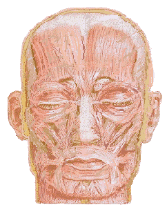

Informações sobre todos os tipos de paralisias.

Na paralisia facial central existe um desvio da rima bucal, apagamento do sulco nasolabial, disartria, ausência da contração do plastima.
A principal causa da paralisia facial central é avascular, leia mais sobre o acidente vascular cerebral em acidentevascularcerebral.com.
Nas paralisias centrais, entretanto, pode haver contração involuntária da musculatura mímica como manifestação emocional. Assim, o indivíduo pode contrair a musculatura mímica do lado paralisado quando ri ou chora, embora não possa fazê-lo voluntariamente.
Qualquer dúvida que tenha, deixe um comentário.